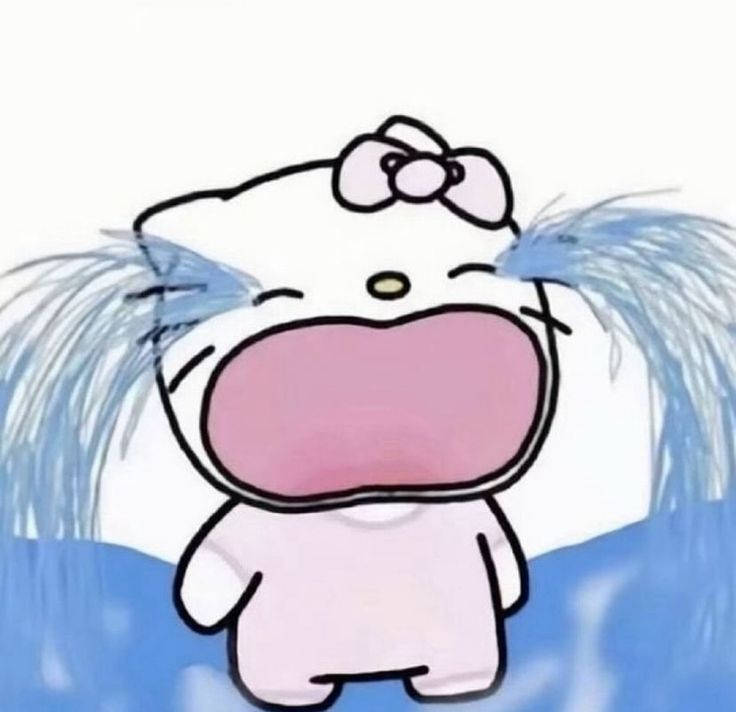
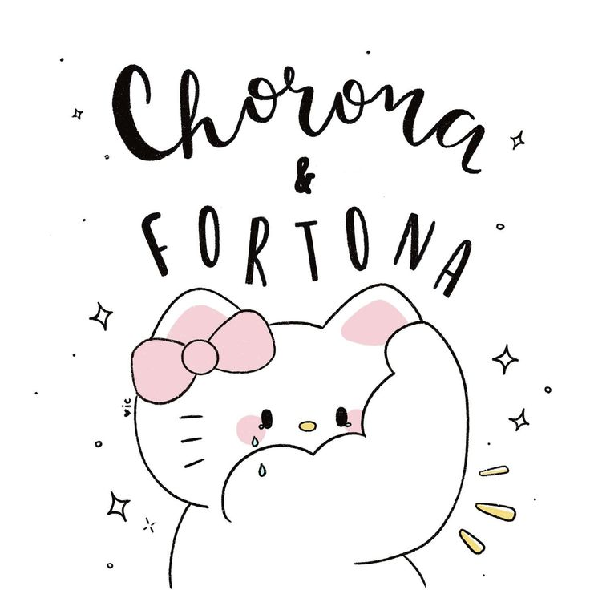
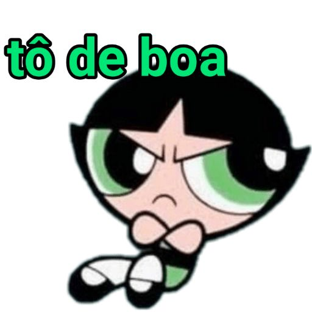

Desde o momento em que você apareceu na minha vida alguma coisa dentro de mim mudou completamente foi como se tudo tivesse ficado mais bonito mais leve mais verdadeiro e mais especial você conseguiu transformar simples mensagens em memórias que eu quero guardar para sempre e até hoje mesmo depois de tantas madrugadas juntos mesmo depois de tantos momentos especiais eu ainda sinto meu coração acelerar toda vez que vejo você aparecendo na minha tela porque amar você nunca virou rotina amar você continua sendo a parte mais intensa e bonita dos meus dias
Eu amo o jeito que você fala comigo e como você consegue transformar momentos simples em memórias especiais
Você me faz sentir amado de uma forma tão sincera que às vezes eu paro e penso em como tive sorte de encontrar você
Mesmo distante o seu sorriso consegue iluminar completamente meus dias e fazer qualquer tristeza desaparecer
Eu amo o jeito que você sente as coisas o jeito que você demonstra amor e como tudo em você parece tão verdadeiro
Sua voz consegue me acalmar mesmo nos dias mais difíceis e sinceramente eu poderia ficar horas ouvindo você falar
Até o jeito que você demonstra ciúme consegue ser adorável para mim porque mostra o quanto você realmente se importa(vc nunca demonstrou eu acho kkkkk)
Mesmo pela tela eu consigo perceber o quanto seu olhar é lindo e como ele consegue mexer comigo de um jeito inexplicável
O que eu mais amo em você é o coração incrível que você tem o jeito que você cuida ama se preocupa e demonstra sentimentos faz você ser única
Eu te vejo como alguém rara alguém que entrou na minha vida de forma inesperada mas conseguiu ocupar um espaço que ninguém mais conseguiria ocupar eu vejo você como meu conforto meu porto seguro minha calmaria nos dias difíceis e quanto mais o tempo passa mais eu percebo que foi você quem meu coração escolheu de verdade
Só fiz esse vídeo pq eu estava com preguiça de programar, odeio romance
Se eu pudesse eu atravessaria qualquer distância só para poder segurar sua mão por alguns minutos Se eu pudesse eu faria o tempo parar em todos os momentos em que você sorriu para mim e sinceramente em todas as vidas possíveis eu ainda escolheria você
Quando a saudade aperta eu releio nossas conversas escuto músicas que me lembram você e imagino o dia em que finalmente vou poder te abraçar porque mesmo distante você continua sendo a pessoa mais próxima do meu coração
Eu sonho muito com o nosso futuro quero assistir filmes com você andar de mãos dadas ouvir sua risada pessoalmente e transformar momentos simples nas memórias mais bonitas da minha vida porque amar você foi a coisa mais bonita que já aconteceu comigo



Meu amor, Aleh, Às vezes eu paro pra pensar em como alguém conseguiu se tornar tão importante pra mim mesmo estando longe. É estranho explicar, porque antes de você eu achava que distância era algo forte demais, algo que esfriava sentimentos, mas você apareceu e conseguiu fazer exatamente o contrário. Você transformou quilômetros em detalhe. Você fez áudios virarem abraço, mensagens virarem conforto e simples notificações virarem a melhor parte do meu dia. Eu amo o jeito que você consegue mudar meu humor sem nem perceber. Amo quando você me manda mensagem do nada, quando conta coisas pequenas do seu dia, quando compartilha pensamentos aleatórios comigo como se eu fosse o lugar mais seguro do mundo. E talvez eu realmente queira ser isso pra você: um lugar seguro, um lugar leve, alguém que você possa olhar e pensar “eu tô em casa”. Tem dias em que eu sinto muita saudade de algo que ainda nem vivi completamente com você. Saudade de te abraçar de verdade, de andar ao seu lado, de ouvir sua voz perto de mim sem tela, sem internet, sem despedidas rápidas. Mas ao mesmo tempo, essa saudade me faz perceber o quanto tudo isso é real. Porque ninguém sente tanta falta assim de algo que não importa. Você entrou na minha vida de um jeito inesperado e ficou. Ficou nos meus pensamentos, nos meus planos, nas minhas músicas favoritas, nos meus horários, no meu coração inteiro. Hoje várias coisas me lembram você: músicas, fotos, frases, horários iguais, noites silenciosas e até coisas simples do cotidiano. É como se meu mundo tivesse aprendido automaticamente a te procurar em tudo. Eu queria que você soubesse que eu admiro muito quem você é. Não só pela sua beleza, mas pelo seu jeito, pela sua personalidade, pela forma como você fala, como se importa, como consegue ser especial sem precisar tentar. Você tem detalhes que talvez nem perceba, mas que fazem toda diferença pra mim. E são justamente esses detalhes que me fazem ter certeza de que eu quero continuar vivendo muita coisa ao seu lado. Talvez nosso relacionamento não seja o mais fácil do mundo. A distância dói, a saudade pesa, às vezes o tempo atrapalha, mas mesmo assim eu escolho você. Escolho continuar aqui. Escolho esperar os dias melhores, as chamadas mais longas, os encontros que ainda vão acontecer, os momentos que ainda vamos criar juntos. Porque amar você vale a pena. E eu gosto de imaginar nosso futuro. Imaginar nós dois contando essa história lá na frente e rindo de tudo que tivemos que enfrentar. Imagino nosso primeiro encontro, nosso primeiro abraço demorado, nossas fotos juntos, nossos momentos simples. Porque no fundo, o que eu mais quero não é algo perfeito é algo verdadeiro. E com você, tudo parece verdadeiro. Obrigado por existir na minha vida. Obrigado por me ouvir, por me fazer sorrir, por me fazer sentir amado também. Você não faz ideia do quanto sua presença mudou meus dias. Mesmo nos momentos difíceis, pensar em você consegue trazer calma. Eu prometo continuar cuidando de nós, continuar valorizando você e tudo que construímos. Prometo continuar demonstrando o quanto você é importante pra mim, porque você merece sentir isso todos os dias. E se algum dia você duvidar do quanto eu te amo, lembra de uma coisa: entre bilhões de pessoas no mundo, foi você quem conseguiu ganhar meu coração inteiro. Com todo meu amor, Erick ❤️
Obrigado por esses quatro meses maravilhosos obrigado por cada conversa cada madrugada cada momento e cada detalhe que fez eu me apaixonar ainda mais por você você virou parte de mim ❤️ Desculpa por ter ficado muito pequeno, é que a porra do krlh da disgraça do código que eu fiz bonitinho deu erro, e até agora eu não achei a porra do erro.